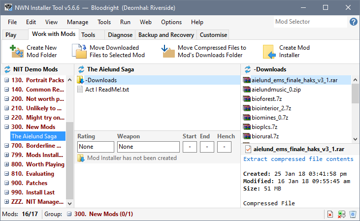
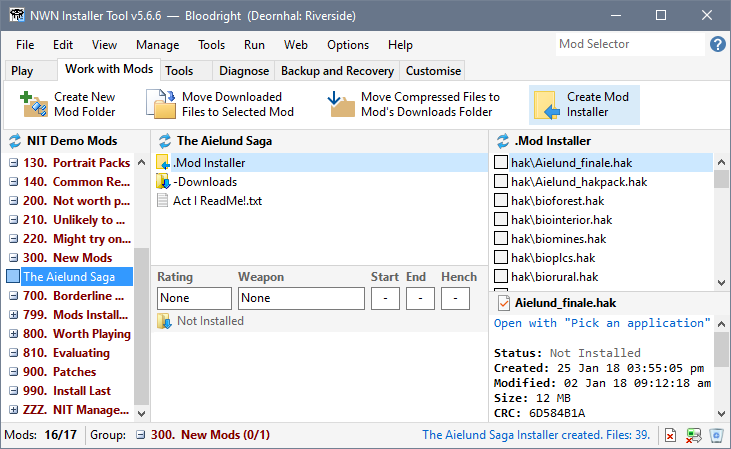

You need to create a Mod Installer (a special folder containing all the files that need to be installed) to use a Mod.
The Installer Tool analyses the contents of your Mod folder to determine which files should be installed and where they need to be placed within the Neverwinter Nights Installation or User Files directory. It uses the information to construct a Mod Installer folder that is used to install or uninstall Mods.
If the same file exists in more than one location, NIT uses the file that has the latest last modified date as well as the size of the file in order to accommodate place holder Mods.
This produces the correct result in almost all cases.


If the Mod was installed prior to creating the Installer, it will be Uninstalled before the Mod Installer is created to avoid retaining orphaned files in your Neverwinter Installation or User Files folder.
After reviewing the generated Mod Installer, you should click Install from the Manage menu to restore the installation.
You can use the Install Mods after Installers have been created and Restore Mod installation state after Installers have been created options on the Preferences page in Advanced Settings or in Basic Settings to automate the installation.
Use the Installer Wizard Builder
Download and install Neverwinter Vault Projects
Download and install Mods from other sites
Review Mod information in added files
Create Mod Installers
Make Mod notes and record information
Add Mods from downloaded files